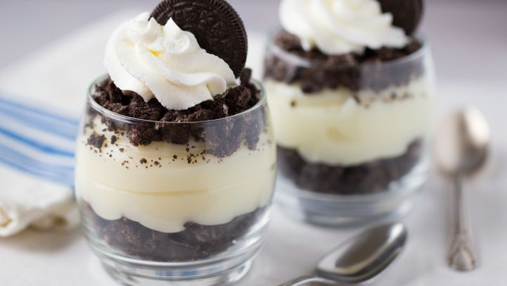

Oreo Pudding by Yooper

Ingredients
- 8oz cream cheese, room temperature
- 1 c. powdered sugar
- 3 c. mil
- 1 tsp. vanilla
- 8 oz Cool Whip
- 1-1lb package Oreo cookies, crushed into chunks
- 4 tbsp. butter, room temperature
- 2 pkg. instant vanilla pudding
Directions
- In a large bowl, cream the cream cheese, butter, and sugar with an electric mixer.
- Add the milk, vanilla, and pudding mixes
- Mix until all the lumps are gone
- Fold in the Cool Whip
- Put half of the cookies in the bottom of a large glass bowl
- Cover with the entire pudding mixture
- Top with remaining cookie chunks
- Cover and refrigerate 8 hour or overnight
- Enjoy!